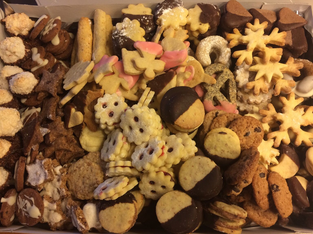
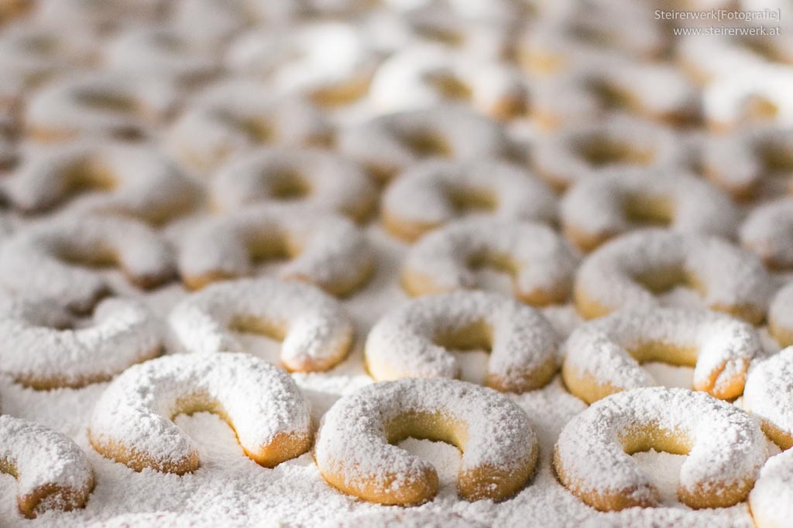

Laura’s alltime favorites
Finally, it’s Christmas time again. Everyone is getting ready: thinking about the perfect Christmas eve menu, picking presents for your loved ones and – of course – baking delicious cookies!

I’d like to share with you my favorite cookie recipes that make it every year. Some of them very traditional, some of them more extra-ordinary. I hope you enjoy baking them as much as I do!
If you have any questions let me know. I also encourage you to try some modifications whenevery you feel like doing so – e.g. using another type of jam or adding a little more or less sugar. So, let’s go!
My great-grandmother’s Vanillekipferl
This recipe has been used by my ancestors for a long time. I am very happy to share it with you and hope you’ll enjoy it as much as my family does.
How to prepare the cookies
- Mix all ingredients for the cookie dough carefully. Then, cover with a foil and and put in a fridge for 30 minutes.
- In the meantime, sift the icing sugar into a large bowl and add the 2 pcks of vanilla sugar. Make sure to use a bowl that can be closed as you can use the remaining (vanilla) sugar mix for other cookies.
- Take the dough out of the fridge and make a roll with about 4 cm diameter. Then, cut into slices (1-2 cm). Form the "Kipferl" and put them on a baking tray with baking paper. Leave enough space so they don't stick together. Bake for 20 minutes at 175°C. When they are starting to get golden they are done.
- Let them cool for three minutes. Then, put into the sugar mix, turn them and make sure the sugar mix gets on all sides of the "kipferl". If they are too warm they break easily, if they are too cold the sugar does not stick.
Tip: Bake the loads on the baking trays separately as you might not be fast enough in dipping them into the sugar mix otherwise when they have the perfect temperature.
You can keep the Kipferl in a cookie box for about 6 weeks.
This video shows you how to form the Vanillekipferl correctly.